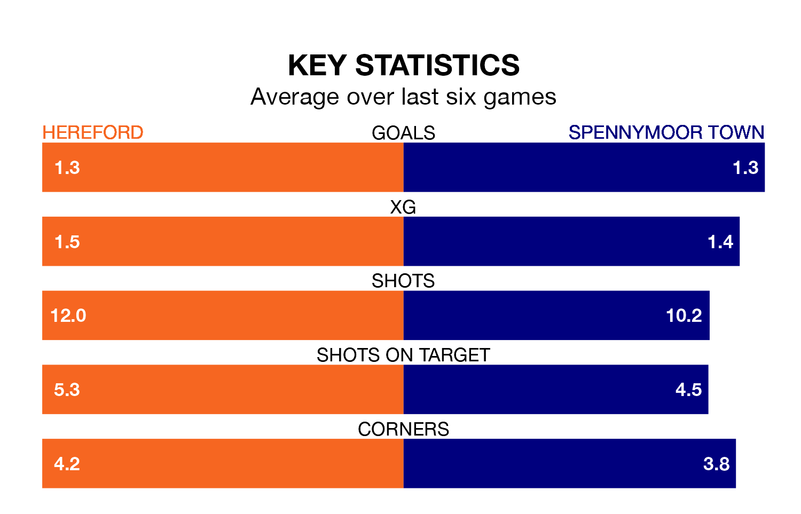

Spennymoor Town come to Edgar Street Athletic Ground to play Hereford on Saturday in poor form, having collected just four points from their last six games.
The visitors have won one and drawn one of their last six fixtures, while the Bulls have three wins and a draw.
Spennymoor are 21st in the table after 21 games, of which they have won nine and drawn four, earning 31 points.
Hereford are 11 places ahead of Town in 10th, with 11 wins and three draws putting them on 36 points.
With 27 goals in 23 games so far this season, the Bulls are the league's joint--8nd-lowest scorers with 1.2 goals per game. But they are conceding fewer than average too, letting in 29 goals at a rate of 1.3 per game.
The away team, meanwhile, are above average scorers, with 1.6 goals per game, compared to a league average of 1.4. They have conceded 1.7 goals per game.
In Glen Taylor and William Harris, Spennymoor have two of the league's most on-form strikers so far this season. They have notched nine goals each, to sit seventh in the scoring charts.
The hosts' top scorer, with seven goals in 13 games, is Jason Cowley.
In the last three years, Hereford and Spennymoor have played each other on five occasions. Spennymoor won four of them and they drew once.
On average, the Bulls scored 0.6 goals and Spennymoor 1.8 in those matches.
Their last meeting was on September 9, when Spennymoor won 2-0 at home.
Hereford's last match was on December 16, a 1-0 win against Bishop's Stortford, with Yusifu Ceesay Ceesay getting the goal for the Bulls.
Spennymoor lost 3-2 against Buxton last time out, also on December 16, with Keenan Ferguson and Taylor on the scoresheet.
Updated: 15:16, 21/12/23